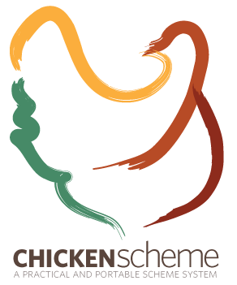

The CHICKEN User's Manual
This is the manual for CHICKEN Scheme, version 5.1.0
- Getting started : What is CHICKEN and how do I use it?
- Using the interpreter : How to use the interactive interpreter, csi
- Using the compiler : How to use the batch compiler
- Deviations from the standard : Where CHICKEN deviates from R5RS
- Extensions to the standard : Extensions to R5RS that CHICKEN provides
- Debugging : Using the "feathers" debugger to inspect running CHICKEN programs.
- Included modules : A reference to CHICKEN's core module library
- Interface to external functions and variables : Accessing C/C++ code and data
- Modules : How CHICKEN manages namespaces
- Types : Optionally typed Scheme code
- Declarations : Compiler declarations
- Extensions : Packaging and installing extension libraries
- Extension tools : chicken-[un]install and chicken-status
- Egg specification format : Format of egg description files
- Units and linking model : How Scheme compilation units are mapped to C
- Internals Information about the internals of CHICKEN
- Deployment : How to distribute and ship CHICKEN programs and libraries
- Cross development : Using CHICKEN to cross-compile for other architectures
- Bugs and limitations : Things that do not work yet.
- Acknowledgements : A list of some of the people that have contributed to make CHICKEN what it is
- Bibliography : Links to documents that may be of interest